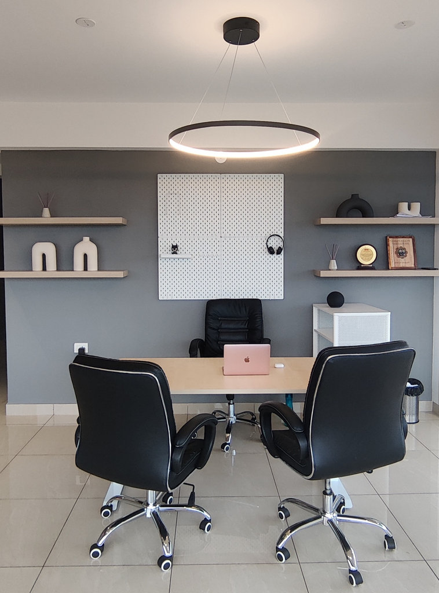

Porvorim, Goa · 2022
Dreamy Bachelorette Pad
A soft, playful home for one — dreamy by name and by nature.

- Location
- Porvorim, Goa
- Completed
- 2022
- Type
- Apartment
- Scope
- Interiors & styling
Designed for a single owner with a clear sense of self, this Porvorim pad trades convention for character: soft tones, playful details and styling that feels personal rather than staged.
It is a small home with a big personality — finished in 2022, and still one of the studio's favourite befores-and-afters.